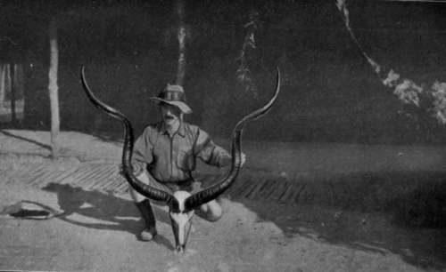

Shooting In Central Angoniland (Nyasaland). Part 6
Description
This section is from the book "Wild Life In Central Africa", by Denis D. Lyell. Also available from Amazon: Wild Life in Central Africa.
Shooting In Central Angoniland (Nyasaland). Part 6
There is another variety of this buffalo bean—Angoni name, kasi—which the natives eat by breaking the pods and cooking the beans, from which they remove the hard skins after boiling well. The Achewa race call the bean chitaidza. One of the worst districts here for the buffalo bean is Mlanje, where the vegetation is rank and tropical.
Scrubb's ammonia eases the itching, but then a sportsman cannot carry a bottle of it with him when tramping in the bush, so he will need to put up with it, and he is sure to meet it sooner or later if he shoots here when the grass is long.
There is another plant which flowers annually which is very irritating and makes one cough hard as the dust gets down one's throat, but this bush is only present in some districts.
Of course there are plenty of thorns and stinging plants, which, not being a botanist, I cannot give the scientific names of; but after a few years, insects that sting and plants that irritate are not much noticed, as the skin gets hardened and inured to them. The newcomer always suffers more than the old hand, as his skin is soft and his blood rich, a fact that insects seem to find out soon.
June 13 saw me on the tramp again, and on this day I went through some lovely undulating country, just like a wild, untended park at home, although, of course, the vegetation was very different. I saw several oribis and let them go, for it is a mistake firing at such small fry, as the shots put other game on the qui vive.
I have often thought a " Maxim Silencer" fitted to the rifle would be handy, and yet it does not seem quite sport to use such a contrivance, as the game has quite a heavy enough handicap against it already, with rifles of great velocity and killing power.
While going along we suddenly disturbed a kudu bull in some thick bush, and as kudu bulls do not usually give one much time for contemplation, I fired at him quickly and saw a sapling between us shake and then drop over. He started forward and then turned and ran, but stopped after going about fifty yards and looked back, when I got him in the lungs, and he fell and died in less than a minute.
Horns Of Kudu Bull Shot In North-Eastern Rhodesia (Tip to tip, 49¼in.)
His head was not a very good one, but it is very difficult seeing the horns of an antelope which is startled, as he holds his head high with the horns laid over his back. The first bullet, which had cut the sapling, had splintered and left several scores along his back, one of which had cut the skin for a length of a foot.
Once when marching to Tete I shot a very fine bull kudu with 57m. horns, and in this case, also, the bullet penetrated a small sapling and then hit the kudu in the lungs, making a hole as large as a 12-bore spherical bullet. This kudu fell in his tracks and died almost immediately.
The best kudu head I have seen in Central Africa was one belonging to a kudu shot by Captain C. H. Stigand, near the Shire River, in Nyasaland, and as far as I can remember its horns measured as follows:
Curve ... | 63 5/8 in. |
Straight | 45 " |
Tip to tip | 45¼ " |
I have never had the good fortune to shoot such a fine kudu as this, although I shot two kudus in North-Eastern Rhodesia, on October 10, 1908, one of which exceeded Captain Stigand's head in two of its measurements.
The dimensions were as under :
Curve ... | 54½in. |
Straight | 46½ " |
Tip to tip | 49¼ " |
Circumference | 10¾ " |
This head was an abnormal one, as it will be seen that there is only a difference of 8in. between the curve and straight measurements, whereas the usual difference is quite a foot.
The other kudu I shot at the same time as the above head had also a fair pair of horns, as they measured :
Curve ... | 53¼ in. |
Straight | 41½ " |
Tip to tip | 32 1/8 " |
Circumference | 11¼ " |
These measurements show a more normal head in every way, and the circumference measurement also shows that the animal was older than the one bearing the abnormally wide horns.
A kudu head is certainly one of the finest trophies a sportsman can hope to get in Africa, and these animals being very wary, as a rule, and not so often shot as many of the antelopes inhabiting more open country, they are still numerous in parts of Nyasaland, Portuguese territory, and North-Eastern Rhodesia, and will likely remain so for many years to come.
I think, as do the majority of men who have shot in Africa, that the kudu is quite the finest antelope there,, although a few hunters might give first place to the sable antelope or the gemsbuck. A kudu's horns look well on a wall, and so do a gemsbuck's, but a sable head, owing to the great backward curve, does not show up as well as the other two heads mentioned. Owing to their wary and retiring habits, kudu are more difficult to find and bring to bag than most antelopes, but this only enhances the value of the trophy to the lucky sportsman who manages to bag a good head.
I have heard men say that kudu are scarce in Central Africa, but they are really one of the most numerous species, and there are plenty of them, only they inhabit rough, broken country where the walking is often hard, at least to people who like to find their sport easy.
Continue to:
- prev: Shooting In Central Angoniland (Nyasaland). Part 5
- Table of Contents
- next: Chapter III. Further Shooting Experiences In Central Angoniland